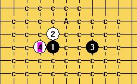
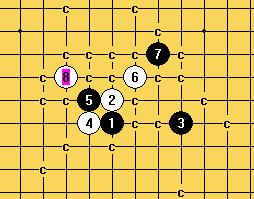
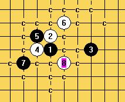
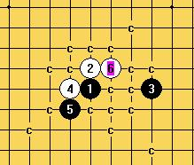
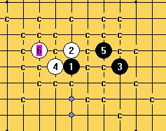
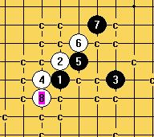
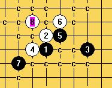

金星刀
首页
妖刀天下
#1 金星刀 作者：慎独 发表时间：2009-4-19 13:36:17
金星刀三手交换，五手二打规则下，黑必败，一打黑可下

4之后黑只有唯一点






［此帖子已被 有志青年 在 2009-4-19 13:49:34 编辑过］
［ 有志青年 于 2009-4-19 13:49:40 时奖励此帖[金币加 20 威望加1］
［ 岳麓小棋后 于 2009-4-19 18:13:48 时花20金币送鲜花一朵］
#2 Re:金星刀 作者：wd1988 发表时间：2009-4-19 18:09:36
好东西！不过楼主介不介意把谱发上来让大家参考参考？
#3 Re:金星刀 作者：岳麓小棋后 发表时间：2009-4-19 18:25:35
建议还是不要把谱发上来了，贻害很大，如李洪斌在博客里所说的，“有兴趣的可以拆拆看，过程比较有趣”，这也是我现在对发谱的看法，拆的过程价值远大于结果，关键点上可以提醒，不提倡发谱。
#4 Re:金星刀 作者：wd1988 发表时间：2009-4-19 18:29:56
不提议发谱呀。。。之前我果然做了好多错事
#5 Re:金星刀 作者：失落刀 发表时间：2009-4-19 18:34:43
个人有个人的选择。妖刀板块都欢迎。
#6 Re:金星刀 作者：岳麓小棋后 发表时间：2009-4-19 18:35:14
没有的事，发上来当然也不是什么错事，也是要奖励的，这个出发点不同，嘻嘻哈哈应该能明白，我也不是针对你，发学习谱，大方向指导谱什么的还是很好的，专发全标C的地毯谱就很有弊处的，小棋后这么认为
#7 Re:金星刀 作者：慎独 发表时间：2009-4-20 13:28:24
 金星刀.rar
金星刀.rar ［ 岳麓小棋后 于 2009-4-20 13:30:52 时花20金币送鲜花一朵］
#8 Re:金星刀 作者：棋元道 发表时间：2011-11-30 20:09:46
只是有禁规则下，黑必胜？